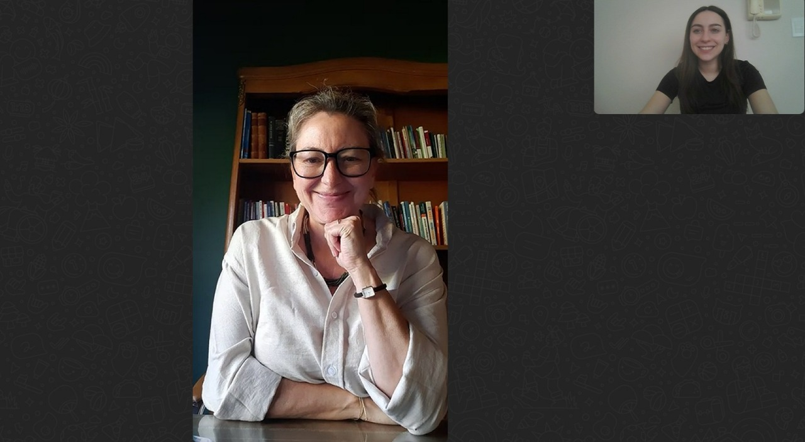

Encuentro cara a cara
Introducción
La siguiente entrevista hacia Ana Elizabeth Fuhr (Psicóloga clínica) busca obtener la visión profesional de la psicología sobre los siguientes ejes temáticos: La comparación mediante redes sociales, como las mismas influyen en el autoestima jóven tanto positiva como negativamente, la posible vinculación entre la ansiedad y el excesivo uso de la web, entre otros. En la misma se abordaron estos temas en profundidad y Ana nos logró dar su perceptiva desde los casos clínicos que ha tenido.

Desde su experiencia clínica: ¿Cómo influyen las imágenes y vidas idealizadas de las redes sociales en la autoestima de las personas jóvenes y adolescentes?
En realidad muchas veces la comparación social en redes sociales o lo que tiene que ver con las redes sociales puede distorsionar la realidad. Las redes sociales muestran parcialidades, generalmente se muestran fotos editadas o pedacitos de realidad que tienen que ver con el éxito y ciertos estándares hegemónicos de belleza, con lo que debería implicar la felicidad.
Esto crea una falsa expectativa de lo que implica la vida de las personas, que es mucho más que eso. El jóven tiende a comparar su vida, donde a veces tiene momentos que no son tan gratos o afecta en su propia autoestima. El adolescente es una población vulnerable e influenciable por las redes sociales y cualquier otro aspecto de la vida cotidiana porque está conformando su identidad todavía. En esa actividad de observación de las redes sociales se compara muchas veces negativamente entonces ese compararse permanentemente va erosionando y condicionando lo que es su autoestima.
Por otro lado, parte de esa identidad que se va conformando también se va alimentando de lo que implican los likes, corazones o comentarios de aprobación. Por ejemplo, cuando hay un comentario de desaprobación tiene un impacto muy fuerte en ese adolescente con esta personalidad que se está construyendo como tal. Esto a veces en cuadros más serios incluso puede llegar a que un adolescente se autolesione por los comentarios negativos.
Provoca lo que se llama una disonancia cognitiva y emocional: Una brecha entre lo que es ese adolescente en este momento y ese otro idealizado de las redes sociales. Va provocando frustración, tristeza, sentimientos de soledad o contribuyendo a crear una imagen corporal negativa insatisfactoria. Este sería un aspecto negativo de las redes sociales.
¿Ha observado un aumento en casos de ansiedad o depresión que se relacione con redes sociales?
Sí, absolutamente sí. Uno debe saber que la ansiedad en realidad no es un trastorno en sí, es una experiencia emocional que tenemos los seres humanos que no es necesariamente mala porque nos prepara, nos permite anticiparnos y prepararnos a un evento al que tenemos que hacer frente (por ejemplo un examen, entrevista trabajo, una cita, etc). Forma parte de las emociones que tenemos los seres humanos.
Sin embargo, la ansiedad desregulada que es lo que se observa hoy en el consultorio, un estado de hipervigilancia permanente, si genera un desborde de ansiedad. Muchas veces tiene que ver con eso, con lo que muestran las redes de información o por la gran expectativa social que hay sobre el jóven y adolescente como lo son las expectativas de éxito. Esto mantiene hiper activado al sistema nervioso simpático y ahí si puede venir lo que se llaman los trastornos.
En relación a la depresión o a los síntomas depresivos, también se observan síntomas de desesperanza y aislamiento social, a pesar de la hiperconectividad que existe hoy. Hay muchos aspectos que son protectores de la salud mental que tiene que ver con el aspecto comunitario y de las redes reales de apoyo de las personas, que tienen que ver con la comunidad. A veces incluso en las grandes ciudades donde hay muchísima gente es cuando estas cuestiones de aislamiento están más presentes porque hay desconfianza y es difícil crear nuevos grupos o porque las demandas de la vida actual genera que las personas están preocupadas siempre y tienen pocos espacios para generar estos lazos. Se produce esta paradoja que a pesar de estar hiperconectados se sienten muy aislados.
¿Cuáles son las señales de que el uso de redes sociales cruzó un límite de hábito a dependencia?
Lo que diferencia una conducta adictiva de cualquier conducta no adictiva es la pérdida de control y la aparición de conductas negativas en la vida de la persona, alteran algo en su vida. Por ejemplo, la persona deja de salir con amigos en la vida real para estar siempre mirando las redes sociales. También empieza a tener un síntoma de abstinencia generando ansiedad.
Esto ocurre porque las redes sociales generan dopamina y cierto tipo de bienestar en el cerebro entonces es una conducta que se quiere repetir. Todo esto influye en el funcionamiento óptimo de la persona. Las señales claves son la tolerancia y la abstinencia,la abstinencia tiene que ver con el malestar emocional: irritabilidad, ansiedad y nerviosismo y la tolerancia es ir aumentando progresivamente el tiempo de uso.
¿En qué situaciones o grupos las redes sociales pueden ser una herramienta positiva?
En relación a los aspectos positivos que tienen las redes, uno tiene que ver con la conexión social, con comunidades de apoyo que permiten reducir el aislamiento. En este sentido en grupos marginales o minoritarios se puede dar una cuestión de identificación y pertenencia. En estas comunidades más vulnerables encuentran un grupo de apoyo con quien se identifican con personas que vivencian lo mismo que ellos, este es un aspecto importante para la salud mental y reducción del aislamiento.
Por otro lado la red social permite darle un espacio a desmitificar cuestiones relacionadas a la salud mental y ver que la vida de las personas no son tan perfectas, que también tienen padecimientos en salud mental, que tienen días malos, que no siempre todo les sale bien, entonces con todo esto se ajusta un poco más a la realidad la vida de las personas.
A su vez, se encuentra el aspecto de la superación de distancias geográficas, uno puede seguir manteniendo lazos con personas que hace mucho tiempo que no ve porque se mudó a otro lugar y seguir sabiendo de su vida por ejemplo. Hay distintos aspectos que son salutogénicos dentro de lo que es el uso de las redes sociales.
¿Crees que las redes sociales pueden ser un espacio útil para la expresión personal, búsqueda de información positiva o educación sobre salud mental?
Esta pregunta va un poco en sintonía con lo que hablaba antes, siempre y cuando se utilicen las redes sociales con cautela, criterio y pudiendo seleccionar la información que uno consume o toma como verídica considero que si pueden llegar a ser útiles a la hora de consumir lo que llamamos información “positiva”, es decir aquella que no tenga un impacto de comparación y negativo en uno mismo.
Conclusiones
Cómo conclusiones finales, este estudio muestra que el impacto de las redes sociales en jóvenes puede abarcar tanto riesgos y aspectos negativos. Un ejemplo de esto es la pérdida de autoestima frente a vidas que parecen perfectas. Por otro lado, también se mencionaron ciertas oportunidades como lo es la creación de comunidades de apoyo y espacios de expresión. Todo impacto ya sea positivo o negativo que las mismas pueden tener van a depender del uso que se haga de las mismas. Para lograr un buen impacto en la mayorparte del tiempo es importante fomentar el pensamiento crítico, consumo consciente y educación en una persona.